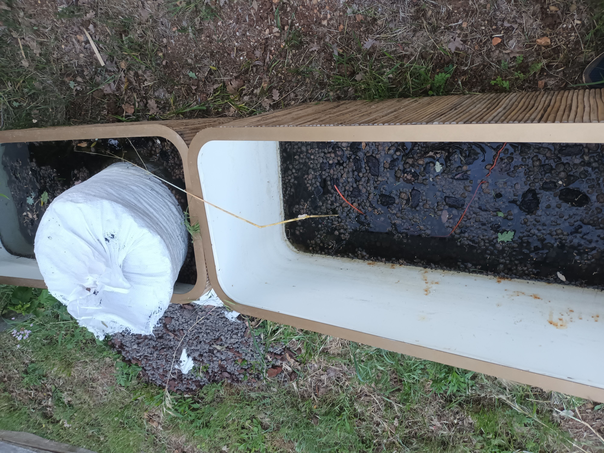

Mon Expertise
Spécialisé dans la remise en état et l'entretien de tous types de volets (bois, PVC, aluminium). Qu'il s'agisse d'un problème de sangle, d'une lame cassée, d'un moteur bloqué ou d'une rénovation complète de volets en bois fatigués par le soleil, je propose des interventions rapides et soignées.
Mes Services
Réparation de Volets Roulants
Remplacement de manivelles, de sangles, de tabliers ou de moteurs défectueux (Somfy, Bubendorff, etc.).
Rénovation de Volets en Bois
Ponçage, traitement du bois, application de peinture de protection ou lasure, et réparation des ferrures.
Changement de Pièces
Remplacement des gonds, des arrêts de volets, des verrous et de la quincaillerie usée pour une sécurité optimale.
Mes Réalisations (Avant / Après)
Voici quelques exemples concrets de chantiers de réparation et de rénovation :

Avant Après
Après
 Avant
Avant
 Après
Après
Contact & Devis Gratuit
Vous avez un projet ou besoin d'un dépannage urgent ? N'hésitez pas à me contacter.
- 📍 Zone d'intervention : Valbonne, Sophia Antipolis, et alentours (Alpes-Maritimes)
- 📧 E-mail : lamhung81@gmail.com
- 📞 Téléphone : 06 11 07 97 44